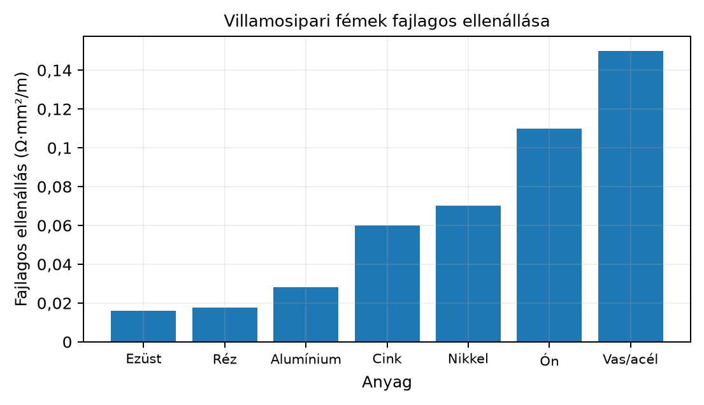
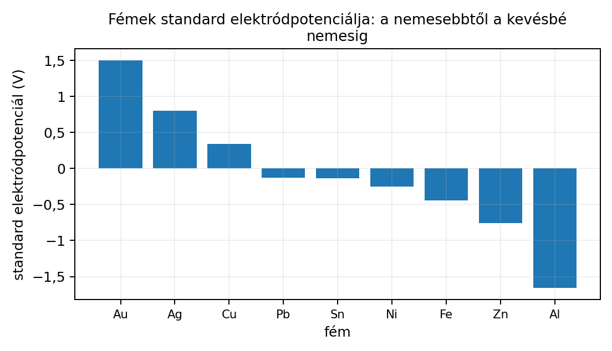
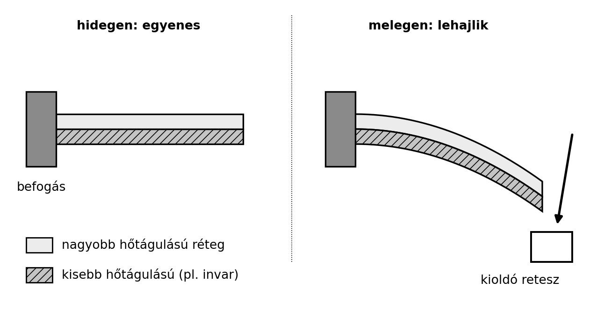

A munkahelyen szinte minden döntés visszavezethető egyetlen anyagválasztási kérdésre: miért réz a lakás vezetéke, miért lehet alumínium a nagy keresztmetszetű betápkábel, és miért lesz veszélyes, ha valaki réz sorkapocsba alumínium vezetéket szorít? A helytelen fémválasztás nemcsak feszültségesést vagy meghibásodást okoz, hanem melegedő kötést, tüzet és áramütéses kockázatot is. Ebben az alfejezetben a réz, alumínium, acél és a villamosiparban használt egyéb fémek tulajdonságait tanuljuk meg úgy, hogy később tudatosan válasszunk vezetőt, sorkapcsot, földelőanyagot és érintkezőbevonatot.
Egy lakáselosztó cseréjekor a szerelő a régi alumínium betápvezetékhez akar rézből készült új elosztókábelt csatlakoztatni. Ha a két vezetőt közvetlenül összecsavarja vagy réz kötőelembe szorítja, a kötés látszólag szorosan fog; egy év múlva mégis melegedni kezd, a szigetelés megszárad, a csavar meglazul. Ugyanaz a csatlakozás bimetál összekötővel és helyesen kivitelezve évtizedekig működőképes maradhat. A különbség a fémek elektromos, mechanikai, hőtágulási és korróziós tulajdonságaiban van.
Definíció. A fémek olyan anyagok, amelyekben a vegyértékelektronok egy része viszonylag szabadon elmozdulhat az atomok között. Ez a fémes kötés és a szabad elektronok magyarázzák a fémek két jellemző tulajdonságát: a jó villamos vezetőképességet és a jó hővezetőképességet.
A fémrácsban a szabad elektronok vezetik az áramot, és ütközéseik adják az ellenállást. Minél szabályosabb a rács, és minél kevesebb szennyező atom, szemcsehatár vagy mechanikai feszültség van benne, annál kisebb a fajlagos ellenállás. Ezért a nagy tisztaságú, lágyított réz jobb vezető, mint a hidegen megmunkált vagy szennyezett réz.
Definíció. A színfém (tiszta fém) egyetlen fémes elemből áll, csak kis mennyiségű, nem szándékos szennyezőt tartalmaz; ilyen a villamos célú vörösréz vagy a tiszta alumínium. Az ötvözet legalább két elem – fém és fém, vagy fém és nemfém – szándékosan előállított keveréke, például acél, rozsdamentes acél, sárgaréz, bronz.
A színfémek és ötvözetek viselkedése jelentősen eltérhet. Az ötvözés általában rontja a vezetőképességet, de javítja a szilárdságot, a kopásállóságot vagy a korrózióállóságot.
A gyakorlatban két valódi vezetőanyag dominál: a vörösréz és az alumínium. A vasat és acélt főként szerkezeti, földelési és szabadvezetéki anyagként alkalmazzuk.
Törvény. Az ellenállást az anyag, a méret és a hőmérséklet határozza meg:
ahol az ellenállás, a fajlagos ellenállás, a vezető hossza, a keresztmetszete. A a -os érték; más hőmérsékleten az ellenállás szerint változik, lásd Az ellenállás függése az anyagtól, mérettől és hőmérséklettől. A fajlagos ellenállást gyakran egységben adjuk meg, mert így szemléletesen hasonlítható össze két anyag.
A villamosipari gyakorlati értékek 20 °C-on, tájékoztató jelleggel:
| Anyag | () | Sűrűség () | Olvadáspont (°C) | Jellemző alkalmazás |
|---|---|---|---|---|
| Ezüst | kb. | kb. | 962 | érintkezőbevonat |
| Réz | kb. | kb. | 1085 | kábelér, sín, tekercs |
| Alumínium | kb. | kb. | 660 | nagy keresztmetszetű kábel, szabadvezeték |
| Cink | kb. | kb. | 420 | horganybevonat |
| Nikkel | kb. | kb. | 1455 | bevonat, ellenálláshuzal-ötvözet |
| Ón | kb. | kb. | 232 | forrasztás, bevonat |
| Vas/acél | kb. – | kb. | 1538 (vas) | szabadvezeték-mag, földelő, szerkezet |
| Ólom | kb. | kb. | 327 | akkumulátor, kábelköpeny |
| Wolfram | kb. | kb. | 3422 | izzószál, íválló érintkező |
Az olvadáspont az olvadóbiztosító elemének és a forraszanyagoknak a megértéséhez is kell: az alacsonyan olvadó ón és ólom (és ötvözeteik) más viselkedést ad, mint a magas olvadáspontú réz vagy wolfram.

Réz. A vörösréz vezetőképessége kiváló, megmunkálhatósága jó, és a felületén képződő oxidréteg viszonylag vékony, bár nem mindig jó vezető. A réz jól forrasztható, préselhető, és a benne kialakított kötések hosszú távon stabilak. Hátránya a nagy sűrűsége, azaz a rézvezető nehéz, valamint az ára, amely a világpiacon erősen változó. Épületvillamossági vezetékezésben, kapcsolószekrény sínezésnél, motor- és trafótekercseknél a réz a standard választás.
Alumínium. Az alumínium fajlagos ellenállása körülbelül -szor nagyobb a rézénél, vagyis ugyanakkora ellenálláshoz nagyobb keresztmetszet kell. Ugyanakkor a sűrűsége kb. harmada a rézének, ezért azonos ellenállású vezető tömege mégis kisebb. Nagy keresztmetszetű betápkábeleknél, légvezetékeknél ez a tömegelőny jelentős. Az alumínium hátránya, hogy felületén igen kemény, elektromosan szigetelő alumínium-oxid réteg képződik, lágy, hajlamos a kúszásra, és hőtágulása nagyobb a rézénél. Ezért csak Al-kötésre alkalmas, jelölt kötőelemekkel és megfelelő szereléstechnikával szabad csatlakoztatni.
Vas és acél. A vas fajlagos ellenállása a rézének kb. 6–8-szorosa (a fenti táblázat szerint), ezért nem használjuk önálló áramvezetőnek olyan helyen, ahol kis ellenállás kell. Ugyanakkor a horganyzott acél kiváló mechanikai szilárdságot és korrózióállóságot ad, ezért földelőszalagnak, földelőszondának, tartószerkezetnek, kábeltálcának és védőcsőnek választjuk. A szabadvezetékekben gyakori az acélmagos alumínium vezető (ACSR jellegű felépítés): az acélmag viseli a mechanikai terhelést, az alumínium köpeny pedig az áramot.
A szerelő ezeket a fémeket meghatározott kivitelben kapja kézbe. Az alábbi ábra felső sorában a vezetők keresztmetszete látható: az 1 tömör ér egyetlen huzal (1. osztály, pl. H07V-U), a 2 sodrott ér kevés vastagabb szálból áll (2. osztály, pl. H07V-R), a 3 finomsodrat sok vékony szálból (5. osztály, pl. H07V-K, H05VV-F); a 4 az alumínium földkábelek szektor alakú, sodrott ere, az 5–6 az acélmagos alumínium szabadvezeték acélmagja és alumíniumszálai. Az alsó sorban a 7 lapos rézsín (elosztók gyűjtősíne), a 8 horganyzott acél földelőszalag és a 9 földelőrúd szerepel.
A vezetőosztály a csatlakoztatást is meghatározza: tömör eret közvetlenül is szoríthatunk csavaros kapocsba, a finomsodratot viszont csak érvéghüvellyel (lásd lent a Cu–Al kötésnél és a Munkahely, szerszám, vezetékmegmunkálás, érvéghüvely és kábelsaru alfejezetben). A HTML-kiadásban a számokra vagy a gombokra mutatva megjelenik az egyes kivitelek neve és tipikus felhasználása.
Összefüggés. Azonos hosszúság és megengedett ellenállás mellett a szükséges keresztmetszet:
Ezért ha egy rézhez méretezett méretet alumíniumra cserélünk, a keresztmetszetet kb. -szorosára kell növelni ahhoz, hogy az ellenállás ne nőjön.
Definíció. A korrózió a fémeknek a környezettel való kémiai vagy elektrokémiai reakciója, amely az anyag felületét vagy tömegét pusztítja. A galvánkorrózió két különböző fém érintkezésekor és elektrolit, például nedvesség jelenlétében fellépő elektrokémiai korrózió.
A galvánkorrózióban a kevésbé nemes fém oldódik, a nemesebb fém védve marad. A réz nemesebb, mint az alumínium, ezért nedves, szennyezett környezetben a Cu–Al érintkezésnél az alumínium korrodálódik, a kötés ellenállása nő, melegszik, és végül a csatlakozó tönkremegy vagy tüzet okoz.
A Cu–Al kötéseknek azonban nem kell elektrolit ahhoz, hogy problémásak legyenek. Három további hatás akkor is érvényesül:
Szabály. A réz és alumínium vezetők közvetlen fém-fém összekötése tilos, ha nincs erre kifejezetten alkalmas, bimetál vagy alumínium-bekötésre minősített kötőelem. A megengedett megoldások:
Az alábbi ábra a két leggyakoribb hibás és a két helyes kivitelt állítja egymás mellé. Az (a) esetben az alumíniumér közvetlenül réz/sárgaréz kapocstestbe kerül: az oxidréteg, a nedvesség okozta galvánkorrózió és a kúszás együtt lazítja és melegíti a kötést. A (b) esetben a beónozott sodrott vég a csavar nyomása alatt kúszik. A (c) Cu–Al bimetál saru alumíniumhüvelyét az Al-érre préseljük, a réz fülét pedig a rézsínre csavarozzuk, így a két fém találkozása a gyárilag hegesztett varratnál, zárt helyen van. A (d) finomsodratú eret préselt érvéghüvely fogja össze.
A kötést mindig feszültségmentes, leválasztott és ellenőrzött állapotban készítjük; a bimetál saru présszerszámát és a csavarnyomatékot a gyártói adat adja meg. Ellenőrzési pont: a présnyomok a hüvely teljes hosszán a gyártó által kijelölt helyen legyenek, és a kész kötést a gyártó előírása szerint utána kell húzni. A HTML-kiadásban a négy esetet egyenként léptetheted.
Melyik fém a kevésbé nemes? A galvánkorrózió megítéléséhez a fémeket elektródpotenciáljuk szerint sorba rakjuk. Az alábbi oszlopdiagramon keresd meg a rezet, az alumíniumot és a cinket (a horganyzott acél bevonatát): melyik párnál a legnagyobb a különbség?

Szabály. Minél távolabb áll egymástól a két fém a sorban, és minél nedvesebb, szennyezettebb (sós, savas) a környezet, annál gyorsabban korrodál a kevésbé nemes fém. Különösen veszélyes, ha a kevésbé nemes fém felülete kicsi a nemesebbhez képest (például alumínium csavar rézlemezen, horganyzott acélbilincs vastag rézvezetőn): a korróziós áram a kis felületen koncentrálódik.
| Párosítás | Beltér, száraz | Kültér, párás, föld | Megoldás |
|---|---|---|---|
| Cu–Cu | rendben | rendben | – |
| Cu–Al | tilos közvetlenül | tilos | bimetál saru vagy összekötő, Al-re minősített kapocs |
| Cu–horganyzott acél | elfogadható | kerülendő | ónozott réz vagy rozsdamentes közdarab, tömített, bevont kötés |
| Al–horganyzott acél | elfogadható | elfogadható (közeli potenciál) | – |
| Cu–rozsdamentes acél | elfogadható | elfogadható | – |
| sárgaréz kapocs–Cu | rendben | rendben | – |
| Al–sárgaréz/Cu | tilos | tilos | bimetál elem |
A táblázat döntéseit a földelők és földelővezetők anyagválasztásánál (Földelők és földelési ellenállás) és a sínek, saruk, kapcsok kötésénél (Kötések, sorkapcsok, csavarnyomaték és ellenőrzés) is alkalmazzuk. Ellenőrző kérdés: miért kerülendő kültéren a rézvezető közvetlen rögzítése horganyzott acélbilinccsel, és mi a megoldás?
Továbbvitt eredmény. A Cu–Al kötések hőciklus-, oxid- és kúszási problémái, valamint az ezekre alkalmazott bimetál csatlakozók és minősített kötőelemek szabálya a későbbi szerelési alfejezetekben minden csatlakozás kialakításánál érvényes marad.
Ezüst. Az ezüst a legjobb fajlagos vezetőképességű fém, de ára miatt nem kábelérnek használjuk. Erősáramú kapcsolók, megszakítók és relék érintkezőinek felületén vékony ezüstbevonat növeli a vezetőképességet és csökkenti az átmeneti ellenállást. Hátránya, hogy kénvegyületek hatására elszíneződik.
Arany. Az arany kiváló korrózióállóságú, ezért törpefeszültségű elektronikai csatlakozókon, mérő-, jelfeldolgozó és híradástechnikai érintkezőkön használják. Erősáramú, nagy áramú kontaktuson nem jellemző, mert puha és drága.
Ón. Az ón a forraszanyagok alapfémje, és galvanikus bevonatként védi a réz- vagy acélfelületet. Rézvezeték ónozott vége jó jelátviteli csatlakozásokban hasznos, de sodrott erősáramú vezető csavaros kötésben való „ónozása” önmagában tilos vagy kerülendő, mert a lágy ón kúszik, idővel meglazítja a kötést. Ilyen helyre érvéghüvely való.
Ólom. Az ólom puha, korrózióálló fém, régebben kábelköpenyként és akkumulátorlemezként használták. Az ólom és vegyületei egészségkárosítóak, ezért alkalmazását környezetvédelmi előírások korlátozzák (ellenőrizendő: RoHS-irányelv és mentességei). Ma főként ólomakkumulátorokban és különleges (például nagyfeszültségű, vegyszerálló) kábelköpenyekben találkozunk vele; épületvillamossági szerelésben ólmot tartalmazó új anyagot (például ólmos forraszt) nem használunk. A forraszanyagokban is ólommentes ötvözeteket írnak elő a környezetvédelmi szabályok.
Cink. A cink elsősorban acélfelületek horganyzott védőrétegeként jelenik meg. A horganyzott acél kábeltálca, védőcső, szerelőlemez, földelőrúd és földelőszalag jó kompromisszumot ad: az acél adja a szilárdságot, a cinkréteg a korrózióvédelmet. A cink a galvánsorban az acélnál kevésbé nemes, ezért először a cinkréteg korrodálódik, és így védi az acélt.
Nikkel. A nikkel kemény, korrózióálló bevonatot ad. Lágyforraszthatóságot, kopásállóságot és vegyszerállóságot igénylő felületeken használják. Nikkel-króm ötvözetekből készülnek a fűtő- és ellenálláshuzalok, mert nagy a fajlagos ellenállásuk, és magas hőmérsékleten is stabilak.
A számértékek tájékoztatók (ellenőrizendő: anyagszabvány, gyártói adatlap).
Bimetál. A bimetál két, egymásra hengerelt fémszalag eltérő hőtágulással (felül nagyobb, például vas-nikkel-mangán ötvözet; alul kisebb, például invar). Hidegen egyenes, melegen a kisebb hőtágulású oldal felé hajlik, és elmozdítja a kioldó reteszt. Ezen az elven működik a Kismegszakítók és kioldási jelleggörbék (B, C, D) termikus kioldója és a Motorvédő kapcsoló, hőkioldó, megszakító és szakaszoló hőkioldója: a túláram melegíti a szalagot, a hajlás idővel kioldást okoz.

Szabvány. A kábelerek vezetőanyagára, hajlékonysági osztályára és megengedett legnagyobb ellenállására a vonatkozó termékszabvány ad előírást; a kábel vezetőereire jellemzően az MSZ EN 60228 (kábelek vezetői) szabványt alkalmazzák (pontos kiadás és osztály ellenőrizendő). A villamos berendezések anyag- és kötéskiválasztásánál emellett az MSZ HD 60364 sorozat szerelési követelményeit, a csatlakozóelemekre pedig a gyártói adatlapokat és a csatlakozó-szabványokat kell figyelembe venni. A fémek pontos fajlagos ellenállása az anyagminőségtől és a gyártási osztálytól függ, ezért méretezésnél mindig az aktuális szabványt és gyártói adatot használjuk.
Egy régi társasházi elosztóban alumínium betápkábelhez kellett új réz elosztósínt csatlakoztatni. A szerelő a régi gyakorlat szerint egyszerűen egy sárgaréz sorkapocsba szorította az Al betápkábelt, majd a kapocsból réz vezetővel ment tovább. Az átadáskor a kötés hideg volt, működött. Hónapokkal később időszakos hőkamerás (termográfiai) vizsgálaton a kötésnél szigeteléselszíneződés, megégett csavarfej és megpuhult szigetelés látszott, a csavar utána húzható volt, pedig korábban nyomatékkal lett meghúzva. Az ok a hőtágulási ciklus, az Al kúszása és a nedvesség okozta galvánkorrózió volt. A javítás bimetál Cu–Al csatlakozóval, oxidmentesítéssel, kontaktzsírral és a gyártó nyomatékértékével készült. Ez az eset mutatja, hogy a „szoros csavar” önmagában nem helyettesíti a helyes anyagpárosítást és szereléstechnikát.
Számítás. A kötés átmeneti ellenállásán a hőteljesítmény . Tanulási példa: ép csavaros kötés (a jellemző érték néhány tized mΩ), meglazult vagy korrodált Cu–Al kötés ennek tízszerese, .
| Áram | Ép kötés (0,5 mΩ) | Hibás kötés (5 mΩ) |
|---|---|---|
| 32 A | 0,51 W | 5,1 W |
| 63 A | 1,98 W | 19,8 W |
| 100 A | 5 W | 50 W |
Ellenőrzés: tízszeres ellenállás azonos áramnál tízszeres hőt ad, és a hő az áram négyzetével nő. Egy kapocsban 20–50 W már forrasztópáka nagyságrendű fűtés, ezért szenesedik el a szigetelés.
| Tünet | Lehetséges ok | Mérés | Javítás |
|---|---|---|---|
| elszíneződött kapocs, szigetelés | laza kötés, közvetlen Cu–Al érintkezés | hőkamerás összehasonlítás terhelés alatt | feszültségmentes bontás, tisztítás, bimetál elem, előírt nyomaték |
| fehér por az alumíniumon | galvánkorrózió | szemrevételezés feszültségmentesen | Al-ra minősített elem, kontaktzsír |
| utánhúzható csavar | kúszás, hőciklus | ellenőrzés nyomatékkulccsal, a gyártó szerint | rugós vagy a gyártó által előírt rendszer |
| azonos áramú fázisok közül egy 15–20 K-nel melegebb | nagy átmeneti ellenállás | mikroohm-mérés (négyvezetékes) feszültségmentesen, a többi fázissal összevetve | a kötés újrakészítése |
A hőkamerás értékelés alapelve az összehasonlítás azonos terhelésű pontokkal (a három fázis azonos kapcsai); konkrét hőmérsékletkülönbség-határokat csak tájékoztatóként használj (ellenőrizendő: termográfiai irányelv). A hőkamerás vizsgálat érintés nélküli, a szekrényt szabályosan, jogosult személy nyitja meg. Bontás előtt kötelező az öt biztonsági szabály: lekapcsolás, visszakapcsolás elleni biztosítás, a feszültségmentesség ellenőrzése, földelés és rövidre zárás, a szomszédos feszültség alatti részek lefedése; a munkát jogosult személy végzi. Lásd Kötések, sorkapcsok, csavarnyomaték és ellenőrzés és Karbantartási terv és állapotfigyelés.
Hiba. Réz sorkapocsba közvetlenül szorítanak alumínium vezetőt, mert „látszólag passzol”. A kötés idővel melegszik, ellenállása nő, és tüzet okozhat. Helyes: bimetál kötőelem, Al-bekötésre minősített kapocs, vagy Cu–Al saru.
Hiba. Az alumíniumfelületet nem tisztítják meg, és a vékony oxidrétegre húzzák a csatlakozót. A kötés már az első napon nagy átmeneti ellenállású lehet, pedig a csavar szoros. Helyes: oxidmentesítés, az Al-felületre való kontaktzsír vagy Al-érvéghüvely, a gyártó előírása szerint.
Hiba. Sodrott rézvezetőt beónoznak, majd csavaros sorkapocsba szorítják. Az ón kúszik, a kötés meglazul. Helyes: érvéghüvely vagy a sorkapocs típusának megfelelő vezetővég-kialakítás.
Hiba. A terhelhetőséget szorosan számolva réz helyett azonos keresztmetszetű alumíniumot építenek be, mert „az alumínium is vezet”. Az ellenállás kb. -szoros, a feszültségesés és a melegedés nagyobb lehet. Helyes: anyagváltáskor a keresztmetszetet és a szerelési módot újra kell számolni.
Hiba. Kültéri vagy párás környezetben a réz és horganyzott acél kötést nem védik le. A cinkréteg feláldozó bevonatként korrodálódik, az acél később rozsdásodik. Helyes: megfelelő tömített kötés, korróziógátló bevonat, vagy a környezetnek megfelelő rozsdamentes anyag.
Gyakorlás: ennek az alfejezetnek a kidolgozott példái, gyakorlatai és megoldással ellátott feladatai az Összefoglaló feladatgyűjtemény villanyszerelő tanulóknak című kötet 9.1 szakaszában találhatók.
A villamosiparban a két fő vezetőfém a réz és az alumínium. A réz fajlagos ellenállása kb. , az alumíniumé kb. ; az Al tehát nagyobb ellenállású, de kisebb sűrűsége miatt azonos ellenállású vezetőben is könnyebb. Az anyagválasztásnál az összefüggést, a feszültségesést, a terhelhetőséget, a mechanikai szilárdságot és a korróziós viszonyokat együtt kell vizsgálni. Az acélt nem áramvezetőnek, hanem földelőnek, szerkezeti elemnek és szabadvezeték-magnak használjuk. A Cu–Al kötések különösen veszélyesek: az oxidréteg, a hőtágulási ciklus, a kúszás és a galvánkorrózió miatt csak bimetál vagy Al-bekötésre minősített kötőelemmel, megfelelő előkészítéssel és nyomatékkal szabad kialakítani. Az ezüstöt és aranyat érintkezőbevonatként, az ónt forrasztásra, az ólmot ma főként akkumulátorokban, a cinket horganybevonatként, a nikkelt bevonatként és ellenálláshuzal-ötvözetként alkalmazzuk. A Cu–Al csatlakozások szabálya (bimetál vagy minősített kötőelem, előkészítés, gyártói nyomaték) a későbbi szerelési alfejezetekben is érvényes marad.
A fajlagos ellenállás, sűrűség, hőtágulási együttható és szilárdság pontos értékei az anyagminőségtől, hőmérséklettől és a gyártási folyamattól függnek; a szövegben megadott értékek tanulási célú közelítések. Méretezéshez, kötéskialakításhoz és korróziós besoroláshoz a mindenkori anyagszabványok (például a kábelerekre vonatkozó MSZ EN 60228 sorozat, ellenőrizendő kiadás), a gyártói adatlapok és a hazai szerelési előírások az irányadók. A Cu–Al csatlakozók alkalmazhatóságát mindig az adott termék minősítő jelölésén, gyártói utasításán és a vonatkozó érvényes csatlakozó-szabványon kell ellenőrizni. Az ötvözetek, például rozsdamentes acél és nikkel-króm ellenálláshuzal esetén a pontos összetétel a termékcsaládtól függ.